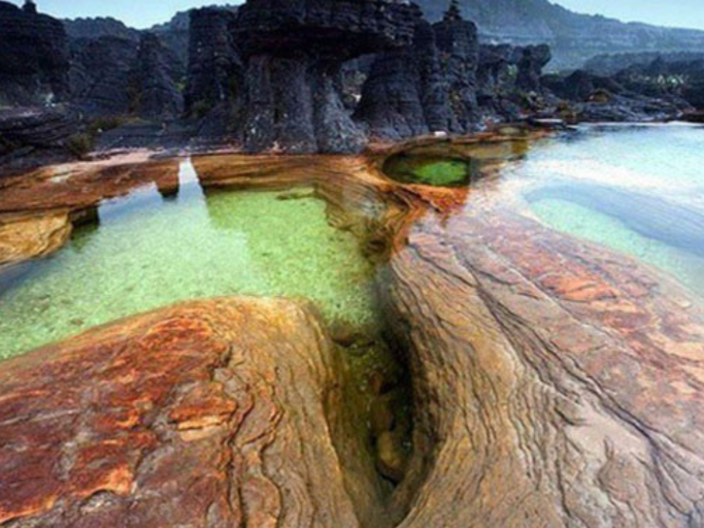

O Roraima é o estado mais ao norte do Brasil e se destaca por suas paisagens naturais, grande diversidade cultural e importância ambiental. Localizado na região amazônica, o estado abriga áreas de floresta, serras e savanas, além de riquezas naturais preservadas. Sua capital, Boa Vista, é conhecida pelo planejamento urbano organizado e por ser a única capital brasileira totalmente localizada ao norte da Linha do Equador. A economia de Roraima baseia-se na agricultura, pecuária, comércio e turismo ecológico, com destaque para o Monte Roraima, uma das formações naturais mais famosas da América do Sul. O estado também possui forte presença de povos indígenas, que contribuem significativamente para a cultura, as tradições e a preservação ambiental da região.
